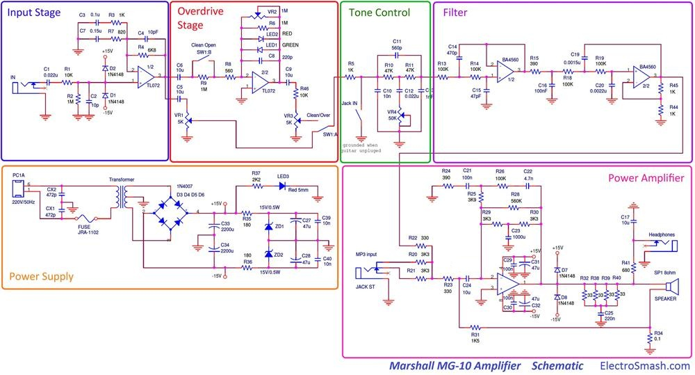
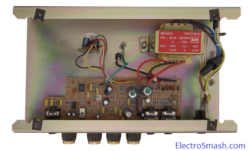
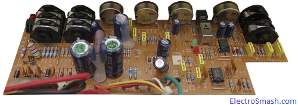
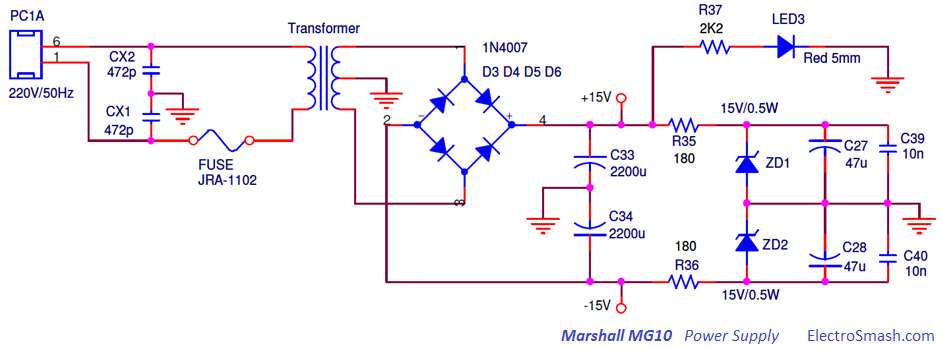
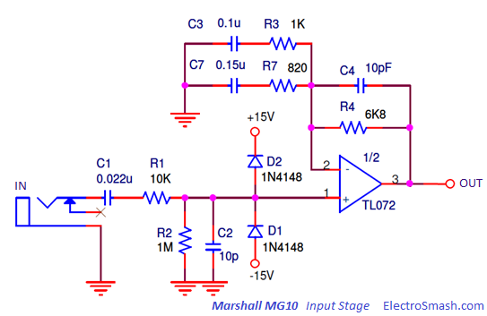
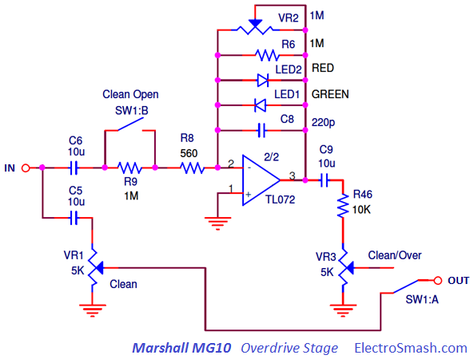
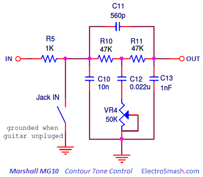
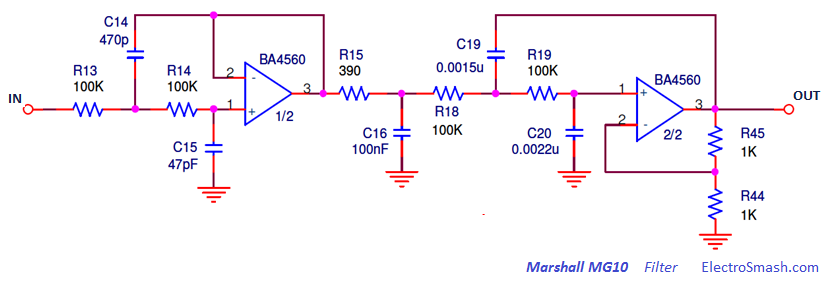
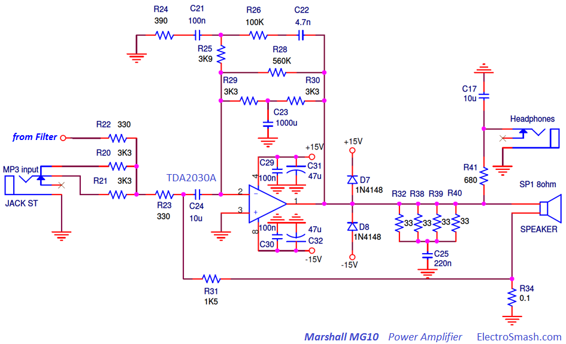
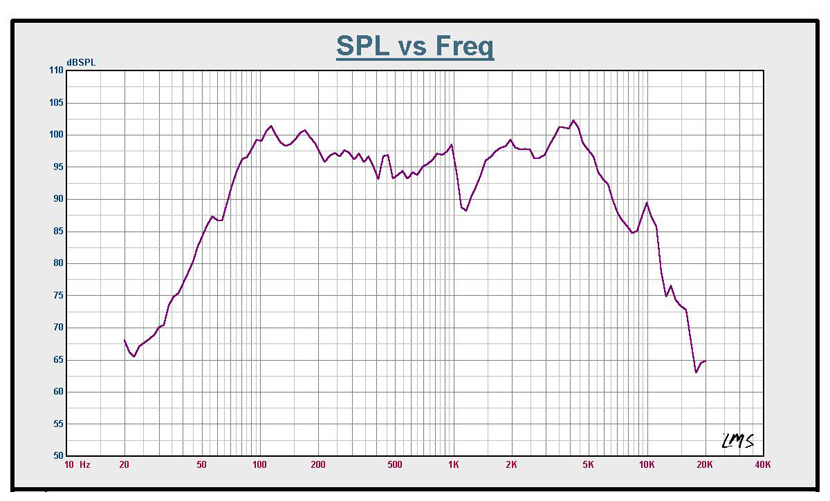

The MG-10 is a 10W solid stage guitar amplifier by Marshall. It features 6-1/2" speaker, 2 channels: clean and overdrive, volume and tone controls, MP3 input and additional headphones output. It gives a solid robust feeling, built like a tank in chipboard wood with a weight of 4.8Kgs and 296x314x175cms dimensions.
Although its sound features are not the finest, this practice amplifier is popular because it is cheap, reliable and it is Marshall. The clean channel plays fairly well, the overdrive channel sound is pretty flat and thin if you plan to use distortion better use a pedal or a guitar effects processor before it. The tone control adds some limits and the amp emits practically no noise. For the money, it is not a bad home amp, small, portable and with the fancy logo.
Table of contents:
1. Marshall MG10 Schematic.
2. Power Supply
3. Input Stage.
3.1 Marshall MG10 Input Impedance.
3.2 Input Stage Frequency Response.
4. Overdrive Channel.
4.1 Overdrive Channel Frequency Response.
5. Clean Channel.
6. Tone Control.
7. Low Pass Filter.
8. Power Amplifier.
8.1 Zobel Network and Feedback Loop.
9. Speaker Cone.
10. Resources.
The Marshall MG-10 circuit can be broken down into 6 blocks: Input Stage, Overdrive Stage, Tone Control, Filter, Power Supply and Power Amplifier:

The Amplifier has 4 knobs: Clean and Distortion Channel Volumes, Gain, and Tone. The Gain knob controls the level of overdrive, the Tone knob adjusts the amount of treble in the sound and the Level knobs control the output volume of the amplifier.
Marshall MG10 PCB Layout.
The printed circuit board is constructed to be integrated into the metal chassis which is screwed up to the chipboard cabinet. The PCB is attached to the chassis using the input/output jacks and potentiometers, not using additional screws. For better heat sinking, the power amplifier and the transformer are attached directly to the frame.  
Marshall MG10 Part List / Bill of Materials.
In the first row the quantity of items are shown:
2 CX1,CX2 472p
2 C1,C12 0.022u
1 C2 10p
1 C3 0.1u
1 C4 10pF
5 C5,C6,C9,C17,C24 10u
1 C7 0.15u
1 C8 220p
3 C10,C39,C40 10n
1 C11 560p
1 C13 1nF
1 C14 470p
1 C15 47pF
1 C16 100nF
1 C19 0.0015u
1 C20 0.0022u
3 C21,C29,C30 100n
1 C22 4.7n
1 C23 1000u
1 C25 220n
4 C27,C28,C31,C32 47u
2 C33,C34 2200u
4 D1,D2,D7,D8 1N4148
1 D3,D4,D5,D6 1N4007
1 JRA-1102 FUSE
2 SW1:A/B DPDT
1 LED1 GREEN
1 LED2 RED
1 LED3 Red 5mm
2 R1,R46 10K
4 VR2,R2,R6,R9 1M
4 R3,R5,R44,R45 1K
1 R4 6K8
1 R7 820
1 R8 560
2 R10,R11 47K
5 R13,R14,R18,R19,R26 100K
2 R15,R24 390
4 R20,R21,R29,R30 3K3
2 R22,R23 330
1 R25 3K9
1 R28 560K
1 R31 1K5
4 R32,R38,R39,R40 33
1 R34 0.1
2 R35,R36 180
1 R37 2K2
1 R41 680
1 SP1 8ohm SPEAKER
1 Transformer
2 VR1,VR3 5K
1 VR4 50K
2 ZD1,ZD2 15V/0.5W
1 IC BA4560
1 IC TL072
1 IC TDA2030A
The Power Supply Stage provides energy and bias voltage to all the circuitry, the whole power consumption is estimated in 40W: 
The schematic is based in a 220VAC to ±12.6VAC center tapped transformer with a full wave rectifier followed by a shunt regulator.
- The capacitors CX1 and CX2 are surge suppressor filters that attenuate mains and switching transients.
- The Fuse protects the device from dangerous inrush currents shutting down everything in case of failure.
- The power-on LED3 diode attached to +15V indicates the correct power supply state.
The rectifier is a circuit that converts AC into DC by allowing the current pass only into one direction. To do so a diode bridge (D3, D4, D5, and D6) is used in order to rectify the full wave of the input 220AC signal.
Supply Regulation:
A Shunt Regulator is used to stabilize the supply at 15V. It is simple circuit based on a single Zener diode (two diodes ZD1 and ZD2 for dual supply ±15).
The output voltage of the regulator can never be higher than the Zener voltage (15V). The resistors R35 and R36 separate the regulator’s input and output voltage (including ripple) from each other and prevents the Zener from directly loading and shunting the supply. Shunt regulator is always quite inefficient due to the constant power loss over the series resistors.
3. Input Stage.
The Input Stage is a non-inverting operational amplifier that will provide high input impedance, voltage gain, and signal filtering. 
The input stage may be affected by transient-voltage/current spikes caused by faulty equipment or DC fluctuation. D1 and D2 (1N4148) back-to-back diodes connected between the supply rails and input are limiter clamping diodes, used to protect the circuit from input signals above 15V+VF (15.65V) or below -15V-VF (-15.65V) which can damage the circuitry.
The Voltage Gain of this stage is frequency dependant, but in the mid frequencies, the value of the non inverting amplifier gain is:
3.1 Marshall MG10 Input Impedance.
The input impedance on the Marshall MG10 is the input resistor R1 plus the parallel of R2 and the TL072 input resistance (106MΩ in the datasheet).
It can be considered as good input impedance, not loading the guitar pickups and preventing tone sucking (as a rule of thumb the input impedance of an amplifier should be at least 1MΩ).
3.2 Input Stage Frequency Response.
The input cap C1, forms a high-pass filter, in conjunction with a resistor R1, R2 and the op-amp input resistance removing possible hum. It stabilizes and isolates the rest of the circuit from the input.
There is also a second order high pass filter, implemented by the parallel gain network which introduces 2 poles at fc1 and fc2:
Therefore the harmonics below 1.4 KHz approx. are attenuated at 40dB/dec.
There is two small 10pF capacitors (C2 and C4) that act as low pass filters, softening harsh content of the waveform and giving more stability to the input stage
4. Overdrive Channel - Clipping Amplifier.
The Clipping Amplifier is selected with the DPDT (Double Pole Double Throw) Switch1. The switch can also make the signal to bypass this part of the circuit resulting in a clean sound. 
It is made of a variable gain inverting op-amp amplifier with two diodes to perform the clip action and two filters in the feedback loop to shape the amount of clipping and the frequency at which it occurs.
Voltage Gain:
Not considering for the moment the diodes LED1 and LED2, and the capacitor C8, the gain of an inverting op-amp stage is defined by the formula:
The gain of the stage can be varied changing the overdrive VR2 control setting, resulting in a max gain of:
note: The GVmin can be considered as 1 (0dB) despite the values of VR2 below 560Ω that will create a negative gain (less than 1).
However, the voltage gain of this stage will not reach values like 892 (59dB). As it will be seen in the next point the gain is limited by the clipping diodes action. The top gain will be around 20 and the additional range (from 20 to 892) will set the sharpness of the clipped signal.
The gain of the clipping circuit is huge (892 max.) if it is compared with other success overdrive designs like the Tube Screamer (118 max.). This fact together with the use of red/green LED diodes for the clipping action instead of silicone ones, results in a harsh distortion with abrupt and drastic waveform, not very responsive, also known as the bee tin.
After the op-amp there is a R46 VR3 voltage divider that introduces a min. attenuation of VR3/(VR3+R6) = 5K/15K = 0.3 = -10dB.
Clipping Diodes:
The symmetric clipping is produced by 2 diodes LED1 and LED2 in the feedback loop of the amplifier; LED1 clips the positive semi-cycle signal while LED2 trims the negative signal semi cycle. Using different diode colors may add a small degree of asymmetry to the clipping, which is considered more tube-like sounding.
When the voltage difference (positive or negative) between the op-amp output and the (-) input is bigger than the led diodes forward voltage VF, the diode will turn on. As the diode turns on forward biased, the equivalent resistance of the diode goes from an open circuit (very high) to a very low value (few ohms), changing the gain of the inverting op-amp from a high value down to 1 and clipping the signal.
Clipping when
With VF for led diodes is around 2V and Vin from a guitar of 100mV approx. With a gain of 20 or higher, the signal will be clipped.
4.1 Clipping Amplifier Frequency response.
- The big capacitor C6 (10uF) filters the bass harmonics below the audio range (~50 Hz.).
- The small C8 (220pF) acts softening the corners of the clipped waveform and mellowing out the high end of the distortion. The cut-off frequency depends on the overdrive potentiometer VR2. With maximum gain fc= 1/(2π x 220pF x 1MΩ) = 723Hz, reducing the gain the cut-off shifts to the high frequencies.
5. Clean Channel.
When the clean channel is selected, the whole Clipping Stage is bypassed. The signal is taken from the input stage and feed to the VR1 potentiometer in the typical passive Volume configuration.
6. Tone Control.
The Marshall MG10 is using a simplified Contour tone control which adjusts the tone with only one potentiometer VR4. 
The circuit is an asymmetric notch filter, with the stop band situated at 1 KHz approx.
The tone control adjusts the mid-range of the signal. Keeping the bass and treble while reducing or eliminating the center mid-range 1KHz results in what is popularly known as a scooped sound, popular among metal players. The bass and treble cannot be modified, so the control is limited.
Due to the asymmetry, after the stop band the high-frequency contents will lose up to 10dB.
Note: Tone circuit input is grounded via the input jack to reduce noise and pops when the guitar is not plugged.
7. Filter
After the Tone Control, there is severe low pass filter made of two consecutive active filters: 2nd order Sallen key + 3rd order Sallen key.
The aim of this filtering is to completely remove high-frequency harmonics before the power amplification in order to adjust the waveform contents to the speaker cone frequency band and avoid noisy harsh responses. 
The mathematics to calculate the cut frequency of this filters are similar to the Boss CE2 Sallen Key Filters. Alternatively, the simple 2nd or 3rd Order Sallen-Key Low Pass Filter Design Tool by Okawa Electric Design can be used to get the cut-off frequencies.
- In the Second Order Sallen Key:
fc0 = 10.7 KHz
- Third Order Sallen Key: A common configuration to implement 3rd order Sallen-Key is using a passive 1st order RC filter + a 2nd order standard Sallen-Key.
fc1 = 461.5 Hz
fc2 = 1. 65 KHz
fc3 = 4.1 KHz
The Filter will remove a big content of the high frequencies as shown below:
The Marshall MG-10 uses the TDA2030A monolithic Power Amplifier, it is intended for use as a low-frequency class AB amplifier. Typically it provides 14W output power (d = 0.5%), the guaranteed output power is 12W on a 4Ω load and 8W on an 8Ω. 
The IC incorporates internal short circuit protection system for automatically limiting the dissipated power so as to keep the working point of the output transistors within their safe operating area. A thermal shut-down system is also included.
8.1 The Zobel Network and Feedback Loop.
The impedance equalization circuit for the load, also known as a Zobel circuit, is used to counteract the rising impedance of a voice coil caused by inductive reactance.
Using a Zobel the power amp is stabilized and clean tones restored, wiping some spurs that manifested themselves as spiky farting on otherwise clean tones. Typical component values of a Zobel Network, which consist of series connected resistor and capacitor are 10 to 100 nF caps and a resistance close to the speaker impedance.
- RZOBEL = R32//R38//R39//R40//R41 = 33//33//33//33 = 8.25Ω
- Capacitor C25 is 220nF (a general value also used in other Marshall designs)
Power Amp Feedback:
The power amplifier uses feedback current compensation. The current feedback voltage is obtained by passing the speaker return current through a current sensing resistor R34 (0.1Ω/2W). C34 blocks any AC voltage feedback, only allowing DC and very low frequencies to pass. The current feedback signal from R34 gets divided down by R31, C24 blocks any DC feedback through that path that.
The feedback makes amplifier remains more stable and the amount of distortion is greatly reduced will reduce the Gain. Other effects are promoting lower speaker damping, and mid scooped frequency response.
9. Marshall MG10 Speaker Cone.
The speaker cone labeled as 160RFB08-1 and manufactured by CHANGZHOU CHUNIL CORP established in Changzhou, China in 2004. It was invested by Munil Chun who has over 30 years speaker engineering experience in Korea.
The Specifications of the speaker are:
| General Specifications | |
| nominal diameter | 6 1/2" ,160 mm |
| power rating | 10 watts RMS |
| nominal impedance | 8 ohms |
| sensitivity (1W/1M) | 91 dB |
| frequency range | 110 - 13.000 Hz |
| chassis type | pressed steel |
| voice coil diameter | 1" 25 mm |
| voice coil material | round copper |
| magnet type | ceramic |
| magnet weight | 5.3. oz, 0.15 kg |
| Thiele & Small Parameters | |
| Fs | 110 Hz |
| Re | 6.5 ohms |
| Qes | 2.035 |
| QMS | 8.458 |
| Qts | 1.640 |
| Vas | 13.514 ℓ |
| Sd | 16.742 m2 |
| No | 0.859 % |
| Mms | 6.146 g |
| Cms | 339.520 ㎛/N |
| Mmd | 4.900 g |
| BL | 3.686Tm |
| Mounting information | |
| diameter | 6.5 ", 165 mm |
| overall depth | 2.40 ", 61mm |
| bolt circle diameter | 6.10 ", 155 mm |
| baffle cutout diameter | 5.70 ", 145 mm |
| mounting slot dimensions | 0.20*0.27 ", 5*7 mm |
| number of mounting slots | 4 |
| unit weight | 17.64 oz, 0.5 kg |
The amplifier speaker colors a lot the tone, being physically impossible to construct a speaker that would have a flat response on a wide band. The response do not shift are than 3dB, considered high quality. The Marshall MG10 response varies around 5dB. 
- The frequency response rolls-off heavily after 5 KHz, this is characteristic for guitar speakers and very typical for all 8” to 15” drivers intended for woofer or mid-range duty. The early high-frequency cut is beneficial in guitar amplification since it attenuates harsh sounding frequencies caused by signal clipping.
- There is another drop in bandwidth at approximately below 80 Hz, very close to the fundamental frequency of the open low E string. Limiting all frequencies below 80 Hz can add a great deal of clarity to the sound.
- The graph shows the typical mid scooped impedance curve. It has high impedance at speaker resonance (~100 Hz). It also has rising impedance with increasing frequency because it contains an inductor (the voice coil). Inductors impede the flow of alternating current: the higher the frequency, the greater the impedance.
10. Resources.
Power Amplifier Feedback by Music Electronics Forum.
All Marshall MG Series Schematics by Amp Archives.
Thanks for reading, all feedback is appreciated 
Some Rights Reserved, you are free to copy, share, remix and use all material.
Trademarks, brand names and logos are the property of their respective owners.


{kind=link}
{kind=link}
{kind=link}
{kind=link}
{kind=link}
{kind=link}
{kind=link}
{kind=link}
{kind=link}
{kind=link}
{kind=link}
{kind=link}
{kind=link}
{kind=link}
{kind=link}
{kind=link}
{kind=link}
{kind=link}
{kind=link}